8. Algoritmy prehľadávania grafu¶
Budeme skúmať rôzne algoritmy, ktoré prechádzajú vrcholy grafu v nejakom poradí. Keďže sa zameriame na neohodnotené neorientované grafy, zvolíme reprezentáciu zoznam množín susedností. Inštancia triedy Graf bude obsahovať atribút vrcholy, ktorý bude zoznamom vrcholov grafu. Samotné vrcholy zadefinujeme vo vnorenej triede Vrchol a preto s nim musíme v triede Graf pracovať pomocou self.Vrchol. Graf obsahuje aj metódy, vďaka ktorým sa bude dať vykresliť do grafickej plochy:
import tkinter
class Graf:
class Vrchol:
canvas = None
def __init__(self, meno, x, y):
self.meno = meno
self.xy = x, y
self.sus = set()
def kresli(self):
x, y = self.xy
self.canvas.create_oval(x-10, y-10, x+10, y+10, fill='lightgray')
self.canvas.create_text(x, y, text=self.meno)
#----------------------------------------------
def __init__(self):
self.vrcholy = []
self.canvas = tkinter.Canvas(bg='white', width=600, height=600)
self.canvas.pack()
self.Vrchol.canvas = self.canvas
def pridaj_vrchol(self, meno, x, y):
self.vrcholy.append(self.Vrchol(meno, x, y))
def pridaj_hranu(self, v1, v2):
self.vrcholy[v1].sus.add(v2)
self.vrcholy[v2].sus.add(v1)
def je_hrana(self, v1, v2):
return v2 in self.vrcholy[v1].sus
def kresli_hranu(self, v1, v2):
self.canvas.create_line(self.vrcholy[v1].xy, self.vrcholy[v2].xy, width=3, fill='gray')
def kresli(self):
for v1 in range(len(self.vrcholy)):
for v2 in range(v1+1, len(self.vrcholy)):
if self.je_hrana(v1, v2):
self.kresli_hranu(v1, v2)
for vrch in self.vrcholy:
vrch.kresli()
Vygenerujme graf s 20 náhodne rozloženými vrcholmi, pričom sa niektoré vrcholy grafu náhodne pospájajú hranami:
#testovanie
import random
graf = Graf()
for i in range(20):
graf.pridaj_vrchol(i, random.randrange(20, 580), random.randrange(20, 580))
for j in range(i):
if random.randrange(5) == 0:
graf.pridaj_hranu(i, j)
graf.kresli()
Takéto úplne náhodne vygenerované grafy sú veľmi neprehľadné a veľmi ťažko by sa na nich sledovali nejaké prehľadávacie algoritmy.
{kind=link}
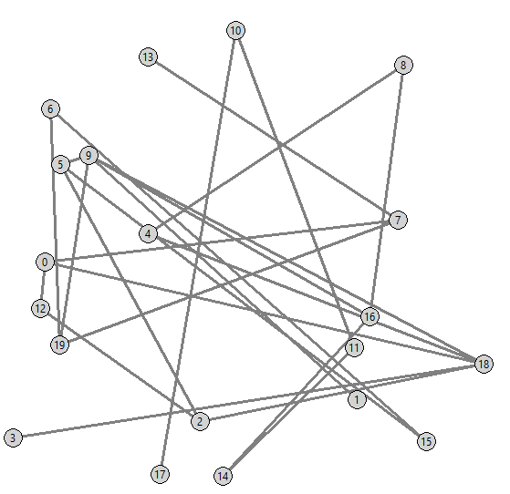
Vygenerujme preto vrcholy grafu do nejakej mriežky a hranami budeme spájať len niektoré susedné vrcholy v mriežke. Toto generovanie vrcholov zabudujeme priamo do inicializácie triedy __init__(), napríklad takto:
import tkinter
import random
class Graf:
...
def __init__(self, n):
self.vrcholy = []
for i in range(n):
for j in range(n):
k = len(self.vrcholy)
self.pridaj_vrchol(k, j*40 + 20, i*40 + 20)
if j > 0 and random.randrange(3):
self.pridaj_hranu(k, k - 1)
if i > 0 and random.randrange(3):
self.pridaj_hranu(k, k - n)
self.canvas = tkinter.Canvas(bg='white', width=600, height=600)
self.canvas.pack()
self.Vrchol.canvas = self.canvas
self.kresli()
...
#testovanie
g = Graf(5)
Všimnite si, že parameter n teraz označuje veľkosť siete vrcholov, ktorá bude mať n x n vrcholov:
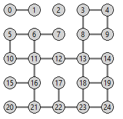
Počet náhodne generovaných hrán bude závisieť od konštánt pri volaní random.randrange(3): vyskúšajte parameter 3 nahradiť 2 a uvidíte „redší“ graf, v ktorom je už menej hrán.
Algoritmus do hĺbky¶
Prehľadávanie grafu (graph traversal) označuje taký algoritmus, ktorý postupne prechádza vrcholy grafu v nejakom poradí. S každým vrcholom pritom vykoná nejakú akciu (napríklad ho zafarbí) a ďalej pokračuje na niektorom z jeho susedných vrcholov. Prehľadávanie sa začne z nejakého (ľubovoľného) vrcholu. Každý vrchol sa pritom navštívi maximálne raz.
Ukážeme dva základné algoritmy:
prehľadávanie do hĺbky (depth-first search) - funguje podobne ako preorder na stromoch: najprv spracuje vrchol a potom postupne pokračuje v prehľadávaní všetkých svojich susedov - opäť rekurzívnym algoritmom
prehľadávanie do šírky (breadth-first search) - prehľadáva vrcholy podobne ako prehľadávanie v stromoch po úrovniach - najprv všetky, ktoré majú vzdialenosť len 1, potom všetky, ktoré majú vzdialenosť presne 2, atď.
Pri prehľadávaní grafu pomocou nejakého algoritmu si potrebujeme evidovať, ktoré vrcholy sa už spracovali. Keďže samotný algoritmus môže byť rekurzívny, túto evidenciu nemôžeme robiť v lokálnej premennej samotnej funkcie - väčšinou budeme používať nový atribút triedy Graf množinovú premennú visited:
self.visited = set()
Algoritmus do hĺbky začína prehľadávanie v nejakom vrchole v1 a využíva metódu triedy Vrchol, ktorá ho zafarbí:
import tkinter, random
class Graf:
class Vrchol:
canvas = None
def __init__(self, meno, x, y):
self.meno = meno
self.xy = x, y
self.sus = set()
def kresli(self):
x, y = self.xy
self.id = self.canvas.create_oval(x-10, y-10, x+10, y+10, fill='lightgray')
self.canvas.create_text(x, y, text=self.meno)
def zafarbi(self, farba):
self.canvas.itemconfig(self.id, outline=farba, width=2)
#----------------------------------------------
...
def dohlbky(self, v1):
self.visited.add(v1)
self.vrcholy[v1].zafarbi('red')
self.canvas.update()
self.canvas.after(100)
for v2 in self.vrcholy[v1].sus:
if v2 not in self.visited:
self.dohlbky(v2) # rekurzívne volanie
#testovanie
g = Graf(10)
g.visited = set()
g.dohlbky(0)
Algoritmus dohlbky sa naštartoval vo vrchole 0 (v ľavom hornom rohu grafu), postupne navštevoval (a pritom zafarboval) jeho susedov a ich susedov atď. Nenavštívené (nezafarbené) ostali tie časti grafu, ktoré nie sú spojené so zvyškom nejakými hranami, napríklad
{kind=link}
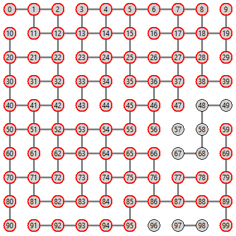
Atribút visited sme tu zadefinovali mimo metód triedy Graf - čo samozrejme nie je pekné. Často to budeme riešiť ďalšou metódou, napríklad:
class Graf:
...
def dohlbky(self, v1):
self.visited.add(v1)
self.vrcholy[v1].zafarbi('red')
## self.canvas.update()
## self.canvas.after(100)
for v2 in self.vrcholy[v1].sus:
if v2 not in self.visited:
self.dohlbky(v2)
def zafarbi_komponent(self, v1):
self.visited = set()
self.dohlbky(v1)
#testovanie
g = Graf(10)
g.zafarbi_komponent(55)
Ak metódu dohlbky() plánujeme volať len z metódy zafarbi_komponent(), samotná funkcia dohlbky() tu môže byť vnorená a vtedy aj premenná visited nemusí byť atribútom triedy, ale obyčajnou premennou. Ukážeme to na metóde velkost_komponentu. Táto metóda dostáva ako parameter jeden vrchol v1 (jeho poradové číslo), od tohto vrcholu spustí algoritmus do hĺbky, nič pritom teraz už nezafarbuje, „len“ sa spolieha na to, že po jeho skončení bude v premennej visited množina všetkých navštívených vrcholov, t.j. tých, ktoré sú spolu s v1 v jednom komponente:
class Graf:
...
def velkost_komponentu(self, v1):
def dohlbky(v1):
visited.add(v1)
for v2 in self.vrcholy[v1].sus:
if v2 not in visited:
dohlbky(v2)
visited = set() # lokálna premenná funkcie velkost_komponentu
dohlbky(v1)
return len(visited)
#testovanie
g = Graf(10)
Dostávame napríklad:
{kind=link}
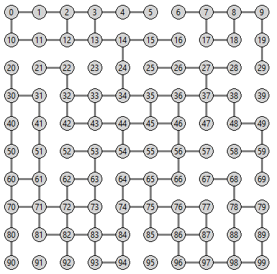
teraz zavoláme:
>>> g.velkost_komponentu(55)
88
>>> g.velkost_komponentu(9)
8
Takto môžeme zadefinovať niekoľko verzií algoritmu dohlbky pre rôzne využitie: napríklad zisťovanie množiny vrcholov v komponente, zisťovanie počtu vrcholov v komponente, zisťovanie počtu komponentov, zafarbovanie vrcholov v rôznych komponentoch rôznymi farbami, rôzne manipulácie s vrcholmi v jednom komponente, …
Vidíme, že po skončení algoritmu dohlbky() bude premenná visited obsahovať množinu všetkých navštívených vrcholov. Na základe toho, môžeme ľahko zistiť, či je graf súvislý: zistíme veľkosť komponentu, ktorý obsahuje napríklad vrchol 0, ak obsahuje všetky vrcholy grafu, zrejme je graf súvislý. Zapíšeme to takto:
class Graf:
...
def je_suvisly(self):
def dohlbky(v1):
visited.add(v1)
for v2 in self.vrcholy[v1].sus:
if v2 not in visited:
dohlbky(v2)
visited = set()
dohlbky(0)
return len(visited) == len(self.vrcholy)
#testovanie
g = Graf(10)
print('graf je suvisly:', g.je_suvisly())
Všetky komponenty grafu¶
Algoritmus dohlbky() využijeme nielen pre jeden komponent grafu, ale postupne pre všetky. Ďalšia metóda zafarbuje všetky komponenty grafu - každý komponent inou (náhodnou) farbou:
class Graf:
...
def zafarbi_komponenty(self):
def dohlbky(v1, farba):
visited.add(v1)
self.vrcholy[v1].zafarbi(farba)
for v2 in self.vrcholy[v1].sus:
#self.zafarbi_hranu(v1, v2, farba)
if v2 not in visited:
dohlbky(v2, farba)
visited = set()
for v1 in range(len(self.vrcholy)):
if v1 not in visited:
dohlbky(v1, f'#{random.randrange(256**3):06x}')
#testovanie
g = Graf(10)
g.zafarbi_komponenty()
Dostávame napríklad
{kind=link}
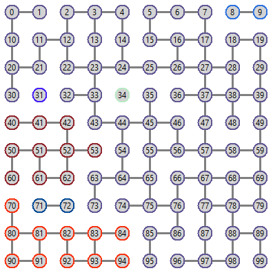
Tu sa oplatí vygenerovať trochu redší graf: pri generovaní grafu v inicializácii môžeme nastaviť napríklad random.randrange(2). Ak ste si uvedomili, že parameter farba sa vo vnútri rekurzívnej funkcie dohlbky nemení, nepotrebovali sme ho posielať ako parameter, ale mohli sme opäť použiť lokálnu premennú rovnako, ako sme to urobili s premennou visited:
class Graf:
...
def zafarbi_komponenty(self):
def dohlbky(v1):
visited.add(v1)
self.vrcholy[v1].zafarbi(farba)
for v2 in self.vrcholy[v1].sus:
#self.zafarbi_hranu(v1, v2, farba)
if v2 not in visited:
dohlbky(v2)
visited = set()
for v1 in range(len(self.vrcholy)):
if v1 not in visited:
farba = f'#{random.randrange(256**3):06x}' # lokálna premenná
dohlbky(v1)
Tiež si všimnite, že týmto algoritmom môžeme zabezpečiť aj farbenie všetkých hrán všetkých vrcholov komponentu. Ak chcete vidieť aj zafarbené hrany komponentu, okrem odkomentovania volania metódy zafarbi_hranu() ju treba aj zadefinovať. Budeme musieť zasahovať aj do iných metód (kresli(), kresli_hranu()):
class Graf:
...
def kresli_hranu(self, v1, v2):
self.id[v1, v2] = self.id[v2, v1] = \
self.canvas.create_line(self.vrcholy[v1].xy, self.vrcholy[v2].xy, width=3, fill='gray')
def kresli(self):
self.id = {} # na zapamätanie id každej nakreslenej hrany
for v1 in range(len(self.vrcholy)):
for v2 in range(v1+1, len(self.vrcholy)):
if self.je_hrana(v1, v2):
self.kresli_hranu(v1, v2)
for vrch in self.vrcholy:
vrch.kresli()
def zafarbi_hranu(self, v1, v2, farba):
self.canvas.itemconfig(self.id[v1, v2], fill=farba)
...
Teraz (odkomentujeme aj farbenie hrany v zafarbi_komponenty()) zafarbený graf vyzerá napríklad takto:
{kind=link}
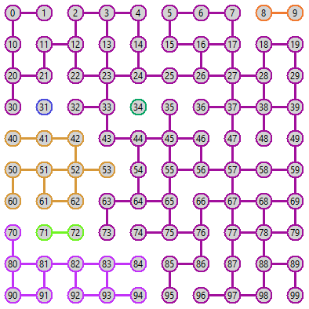
Ešte ukážeme metódu, ktorá zisťuje počet komponentov grafu a je veľmi podobná metóde na farbenie komponentov:
class Graf:
...
def pocet_komponentov(self):
def dohlbky(v1):
visited.add(v1)
for v2 in self.vrcholy[v1].sus:
if v2 not in visited:
dohlbky(v2)
visited = set()
pocet = 0
for v1 in range(len(self.vrcholy)):
if v1 not in visited:
dohlbky(v1)
pocet += 1
return pocet
#testovanie
g = Graf(10)
print('pocet komponentov:', g.pocet_komponentov())
g.zafarbi_komponenty()
a dozvieme sa, že naposledy zobrazený graf má 7 komponentov.
Vidíme, že algoritmus do hĺbky môžeme použiť napríklad na:
zistenie počtu komponentov grafu, resp. zisťovanie, či je graf súvislý
zistenie, či sú dva vrcholy v tom istom komponente
zisťovanie počtu vrcholov v jednotlivých komponentoch grafu (veľkosti komponentov)
zisťovanie najväčšieho komponentu grafu
zafarbovanie vrcholov a hrán jednotlivých komponentov grafu
Nerekurzívny algoritmus do hĺbky¶
Vieme, že rekurzia v Pythone má obmedzenú hĺbku volaní (okolo 1000), preto pre niektoré väčšie grafy rekurzívny algoritmus dohlbky() môže spadnúť na príliš veľa rekurzívnych volaní (napríklad už aj pre Graf(50) má rekurzia veľkú šancu spadnúť).
Prepíšme preto rekurzívny algoritmus dohlbky() na nerekurzívnu verziu. Ukážeme to na metóde velkost_komponentu(), ktorá používa rekurzívnu vnorenú funkciu dohlbky(). Na odstránenie rekurzie využijeme zásobník: mohli by sme použiť už predtým definovanú triedu Stack, ale vystačíme si s pomocným zoznamom s metódami append() (namiesto push) a pop(). Nerekurzívny algoritmus môže vyzerať napríklad takto:
class Graf:
...
def velkost_komponentu(self, v1): # pôvodná rekurzívna verzia
def dohlbky(v1):
visited.add(v1)
for v2 in self.vrcholy[v1].sus:
if v2 not in visited:
dohlbky(v2)
visited = set()
dohlbky(v1)
return len(visited)
def velkost_komponentu1(self, v1): # upravenaá nerekurzívna verzia
visited = set()
stack = [v1] # vlož do zásobníka štartový vrchol
while stack: # kýym je zasobník neprázdny
v1 = stack.pop() # vyber z vrchu zásobníka
visited.add(v1)
for v2 in self.vrcholy[v1].sus:
if v2 not in visited:
stack.append(v2) # vlož do zasobníka namiesto volania dohlbky(v2)
return len(visited)
#testovanie
g = Graf(10)
print(g.velkost_komponentu(0))
print(g.velkost_komponentu1(0))
Hoci tento algoritmus vyzerá v poriadku, ak ho otestujeme na nejakom jednoduchom grafe, dá sa zistiť, že niektorý vrchol sa bude spracovávať (navštevovať) viackrát a to môže byť v niektorých situáciách neprijateľné. Ak by sme si algoritmus odtrasovali ručne, zistili by sme, že niektoré čísla vrcholov sa dostávajú do zásobníka viackrát (napríklad vrchol, ktorý ešte nebol navštívený, ale je susedom viacerých už navštívených vrcholov). Jednoducho to môžeme preveriť aj tak, že do tohto algoritmu vložíme počítadlo navštívených vrcholov a po skončení algoritmu porovnáme tento počet so skutočným počtom vrcholov komponentu. Napríklad pridáme premennú pocet:
1class Graf:
2
3 ...
4
5 def velkost_komponentu1(self, v1):
6 visited = set()
7 stack = [v1] # vlož do zasobníka štartový vrchol
8 pocet = 0
9 while stack: # kým je zasobník neprázdny
10 v1 = stack.pop() # vyber z vrchu zásobníka
11 visited.add(v1)
12 pocet += 1
13 for v2 in self.vrcholy[v1].sus:
14 if v2 not in visited:
15 stack.append(v2) # vlož do zásobníka namiesto volania dohlbky(v2)
16 return len(visited), pocet
Ak teraz spustíme velkost_komponentu1() s rôzne veľkými a s rôzne hustými grafmi, často dostaneme dve rôzne čísla: počet vrcholov v komponente a počet navštívených vrcholov je rôzny. Napríklad už aj pre tento graf, ktorý má veľkosť komponentu 9 (je súvislý), navštívil niektoré vrcholy viackrát a vidíme:
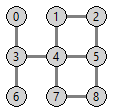
>>> g = Graf(3)
>>> g.velkost_komponentu1(0)
(9, 11)
Môžeme to odkrokovať aj ručne:
riadok v1 stack visited pocet
===========================================================
6 0 [] {}
9 0 [0] {} 0
12 0 [] {0} 1
15 0 [3] {0} 1
12 3 [] {0,3} 2
15 3 [4,6] {0,3} 2
12 6 [4] {0,3,6} 3
15 6 [4] {0,3,6} 3
12 4 [] {0,3,4,6} 4
15 4 [1,5,7] {0,3,4,6} 4
12 7 [1,5] {0,3,4,6,7} 5
15 7 [1,5,8] {0,3,4,6,7} 5
12 8 [1,5] {0,3,4,6,7,8} 6
15 8 [1,5,5] {0,3,4,6,7,8} 6
12 5 [1,5] {0,3,4,5,6,7,8} 7
15 5 [1,5,2] {0,3,4,5,6,7,8} 7
12 2 [1,5] {0,2,3,4,5,6,7,8} 8
15 2 [1,5,1] {0,2,3,4,5,6,7,8} 8
12 1 [1,5] {0,1,2,3,4,5,6,7,8} 9
15 1 [1,5] {0,1,2,3,4,5,6,7,8} 9
12 5 [1] {0,1,2,3,4,5,6,7,8} 10
15 5 [1] {0,1,2,3,4,5,6,7,8} 10
12 1 [] {0,1,2,3,4,5,6,7,8} 11
15 1 [] {0,1,2,3,4,5,6,7,8} 11
16 len(visited) == 9
Správne by mal nerekurzívny algoritmus vyzerať takto:
class Graf:
...
def velkost_komponentu1(self, v1):
visited = set()
stack = [v1]
while stack:
v1 = stack.pop()
if v1 not in visited: # kontrola, či už nebol spracovaný
visited.add(v1)
for v2 in self.vrcholy[v1].sus:
if v2 not in visited:
stack.append(v2)
return len(visited)
Teda, každý vrchol, ktorý vyberieme zo zásobníka (stack.pop()), ešte skontrolujeme, či už náhodou nebol spracovaný skôr.
Algoritmus do šírky¶
Ak by sme potrebovali prehľadávať napríklad binárny strom po úrovniach (algoritmus do šírky), potrebovali by sme na to dátovú štruktúru rad (queue). Podobne budeme postupovať aj pri algoritme pre graf. Tento algoritmus sa bude od nerekurzívneho algoritmu do hĺbky líšiť len tým, že namiesto stack použijeme queue (a teda zmeníme aj metódu na výber z radu - namiesto pop() použijeme pop(0)):
class Graf:
...
def velkost_komponentu2(self, v1):
visited = set()
queue = [v1] # vlož do radu štartový vrchol
while queue: # kým je rad neprázdny
v1 = queue.pop(0) # vyber zo začiatku radu
if v1 not in visited:
visited.add(v1)
for v2 in self.vrcholy[v1].sus:
if v2 not in visited:
queue.append(v2) # vlož na koniec radu
return len(visited)
Takto zapísaný algoritmus bude robiť presne to isté ako nerekurzívny algoritmus velkost_komponentu1(). Rozdiel bude v tom, že sa všetky vrcholy grafu navštívi v inom poradí: najprv sa spracujú všetky najbližšie susediace vrcholy ku štartovému; potom sa spracujú všetky ich ešte nenavštívené susedné vrcholy atď. Aby sme lepšie videli toto poradie navštevovania vrcholov, môžeme pridať výpis poradových čísel:
class Graf:
...
def velkost_komponentu2(self, v1):
visited = set()
queue = [v1]
pocet = 0
while queue:
v1 = queue.pop(0)
if v1 not in visited:
visited.add(v1)
x, y = self.vrcholy[v1].xy
self.canvas.create_text(x+10, y+10, text=pocet)
pocet += 1
for v2 in self.vrcholy[v1].sus:
if v2 not in visited:
queue.append(v2)
return len(visited)
#testovanie
g = Graf(4)
print(g.velkost_komponentu2(0))
dostávame takýto obrázok:
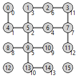
Vďaka tejto veľmi užitočnej vlastnosti algoritmu ho môžeme jednoducho vylepšiť: pri každom spracovávanom vrchole si budeme pamätať aj jeho momentálnu vzdialenosť - teda niečo ako úroveň „vnorenia“ (vzdialenosť od štartu). Štartový vrchol prehľadávania bude mať úroveň 0 (vzdialenosť 0), všetci jeho bezprostrední susedia budú mať úroveň 1 (vzdialenosť 1 od štartu) a každý ďalší vrchol bude mať úroveň o 1 väčšiu ako vrchol, od ktorého sa sem prišlo.
Program prepíšeme tak, že pri každom vrchole v rade (v štruktúre queue) si budeme pamätať aj jeho úroveň a pri spracovaní vrcholu túto úroveň vypíšeme (algoritmus sme už premenovali na dosirky()):
class Graf:
...
def dosirky(self, v1):
visited = set()
queue = [(v1, 0)] # vložili sme vrchol a jeho úroveň
while queue:
v1, uroven = queue.pop(0)
if v1 not in visited:
visited.add(v1)
x, y = self.vrcholy[v1].xy
self.canvas.create_text(x+12, y+12, text=uroven)
## self.canvas.update() # spomalovanie vypisu
## self.canvas.after(100)
for v2 in self.vrcholy[v1].sus:
if v2 not in visited:
queue.append((v2, uroven+1)) # vložili sme vrchol a jeho úroveň
#testovanie
g = Graf(10)
g.dosirky(55)
Uvedomte si, že vrchol v ktorom začíname prehľadávanie má číslo úrovne 0, jeho susedia majú úroveň 1, ich susedia úroveň 2, … Toto číslo vyjadruje vzdialenosť každého vrcholu od štartového.
Dostávame napríklad takýto výpis:
{kind=link}
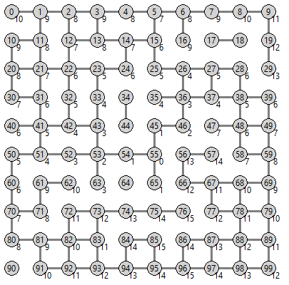
Ak si pripomeniete algoritmus po úrovniach na binárnych stromoch (4. prednáška), ukázali sme aj druhý variant, ktorý nepoužíva len jeden rad (queue), ale aj druhý, v ktorom sa skladá ďalšia úroveň (u nás to bude dalsi_queue). Pozrite si, ako sa teraz zmení predchádzajúca verzia algoritmu dosirky (obe verzie teraz robia to iste):
class Graf:
...
def dosirky(self, v1):
visited = set()
queue = [v1]
uroven = 0
while queue:
#print(uroven, set(queue))
dalsi_queue = []
for v1 in queue:
if v1 not in visited:
visited.add(v1)
x, y = self.vrcholy[v1].xy
self.canvas.create_text(x+12, y+12, text=uroven)
## self.canvas.update() # spomaľovanie výpisu
## self.canvas.after(100)
for v2 in self.vrcholy[v1].sus:
if v2 not in visited:
dalsi_queue.append(v2)
queue = dalsi_queue
uroven += 1
V tejto verzii vieme vypísať aj množinu vrcholov v každej úrovni (zakomentovaný riadok print(...)).
V niektorých situáciách je vhodnejšie namiesto výpisu čísla úrovne do grafickej plochy ho uložiť priamo do atribútu vo vrchole. (Namiesto self.canvas.create_text... zapíšeme napríklad self.vrcholy[v1].uroven = uroven)
Tento algoritmus môžeme použiť aj na zafarbovanie vrcholov grafu podľa toho, ako ďaleko sú od nejakého konkrétneho vrcholu:
class Graf:
...
def zafarbi(self, v1, farby):
visited = set()
queue = [(v1, 0)]
while queue:
v1, uroven = queue.pop(0)
if v1 not in visited:
visited.add(v1)
self.vrcholy[v1].zafarbi(farby[uroven % len(farby)])
for v2 in self.vrcholy[v1].sus:
if v2 not in visited:
queue.append((v2, uroven+1))
V parametri farby posielame zoznam nejakých farieb, pričom samotný štartovací vrchol sa zafarbí farbou farby[0], jeho susedia farbou farby[1], ich susedia ďalšou farbou, atď. Ak je farieb v zozname farby menej ako rôznych vzdialeností v grafe, táto funkcia začne používať farby opäť od začiatku zoznamu.
Algoritmus sme spustili pre 8 farieb, pričom úmyselne sme prvé dve farby dali rovnaké, aj ďalšie dve, atď. aby sa lepšie zobrazilo farbenie, teda štartový vrchol 55 aj jeho najbližší susedia sú červení, vrcholy vo vzdialenosti 2 a 3 od štartu 55 sú modré, atď.
g = Graf(10)
g.zafarbi(55, ['red', 'red', 'blue', 'blue', 'yellow', 'yellow', 'green', 'green'])
Dostávame takéto farbenie grafu:
{kind=link}
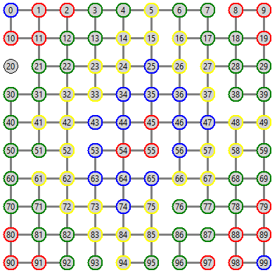
Vzdialenosť a najkratšia cesta¶
Algoritmus do šírky môžeme využiť aj na zisťovanie vzájomnej vzdialenosti ľubovoľných dvoch vrcholov v grafe. Pod vzdialenosťou tu rozumieme dĺžku najkratšej cesty z jedného vrcholu do druhého. Ak takáto cesta neexistuje (vrcholy sú v rôznych komponentoch grafu), metóda môže vrátiť napríklad hodnotu -1:
class Graf:
...
def vzdialenost(self, v1, ciel):
visited = set()
queue = [(v1, 0)]
while queue:
v1, uroven = queue.pop(0)
if v1 not in visited:
visited.add(v1)
if v1 == ciel:
return uroven
for v2 in self.vrcholy[v1].sus:
if v2 not in visited:
queue.append((v2, uroven+1))
return -1
#testovanie
g = Graf(10)
print(g.vzdialenost(11, 55))
Metóda vzdialenost() funguje na princípe algoritmu dosirky len pritom nič nezafarbuje. Napríklad pre graf
{kind=link}
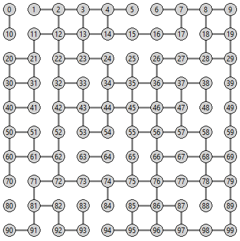
môžeme otestovať:
>>> g.vzdialenost(55, 11)
8
>>> g.vzdialenost(11, 55)
8
>>> g.vzdialenost(1, 99)
17
>>> g.vzdialenost(0, 1)
-1
Rozšírime tento algoritmus nielen na zistenie vzdialenosti dvoch vrcholov, ale aj na zapamätanie najkratšej cesty. Použijeme takúto ideu: každý vrchol si namiesto úrovne bude pamätať svojho predchodcu, t.j. číslo vrcholu, z ktorého sme sem prišli. Na záver, keď dorazíme do cieľa, pomocou predchodcov vieme postupne skonštruovať výslednú postupnosť - cestu medzi dvoma vrcholmi. Ak pri zostavovaní cesty dostaneme ako predchodcu None znamená to, že tento vrchol už nemá svojho predchodcu lebo je to štartový vrchol (odtiaľto sme naštartovali hľadanie cesty).
Algoritmus hľadania najkratšej cesty v grafe:
class Graf:
...
def cesta(self, v1, ciel):
visited = set()
queue = [(v1, None)]
while queue:
v1, predchodca = queue.pop(0)
if v1 not in visited:
visited.add(v1)
self.vrcholy[v1].pred = predchodca
if v1 == ciel:
vysl = []
while v1 is not None:
vysl.append(v1)
v1 = self.vrcholy[v1].pred
return vysl[::-1]
for v2 in self.vrcholy[v1].sus:
if v2 not in visited:
queue.append((v2, v1))
return []
Pomocou tejto metódy vieme teda zistiť nielen vzdialenosť dvoch vrcholov ale aj konkrétnu postupnosť vrcholov, cez ktoré treba prejsť. Napríklad pre graf z predchádzajúceho obrázka dostávame:
>>> g.cesta(55, 11)
[55, 45, 35, 34, 24, 23, 13, 12, 11]
>>> g.cesta(11, 55)
[11, 12, 13, 23, 24, 34, 35, 45, 55]
>>> g.cesta(1, 99)
[1, 2, 3, 13, 23, 24, 34, 35, 36, 37, 47, 57, 58, 68, 69, 79, 89, 99]
>>> g.cesta(1, 0)
[]
Táto metóda vytvorí postupnosť vrcholov, ktoré tvoria najkratšiu cestu medzi dvoma vrcholmi. Túto cestu môžeme tiež aj vykresliť, napríklad takto:
class Graf:
...
def cesta(self, v1, v2l):
...
def kresli_cestu(self, v1, ciel, farba):
cesta = self.cesta(v1, ciel)
if cesta:
for v1 in range(len(cesta)-1):
#self.vrcholy[cesta[v1]].zafarbi(farba)
self.zafarbi_hranu(cesta[v1], cesta[v1+1], farba)
#self.vrcholy[cesta[-1]].zafarbi(farba)
else:
print('cesta neexistuje')
a v predchádzajúcom grafe zobrazíme najkratšie cesty:
>>> g.cesta(55, 11)
[55, 45, 35, 34, 24, 23, 13, 12, 11]
>>> g.kresli_cestu(55, 11, 'red')
>>> g.cesta(90, 9)
[90, 91, 81, 71, 72, 73, 74, 75, 65, 55, 56, 46, 36, 26, 27, 28, 18, 8, 9]
>>> g.kresli_cestu(90, 9, 'lime')
>>> g.kresli_cestu(10, 19, 'green')
cesta neexistuje
V jednom obrázku vidíme obe cesty:
{kind=link}
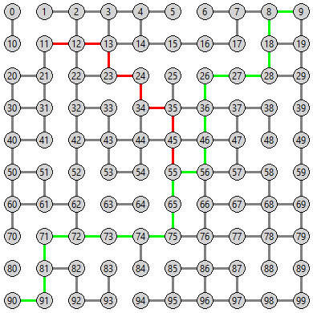
Zhrňme použitie algoritmu do šírky:
podobne ako do hĺbky, vieme zistiť vrcholy, ktoré patria do jedného komponentu a teda aj zistiť počet komponentov
vieme zistiť (zafarbiť) vrcholy (alebo hrany), ktoré sú rovnako vzdialené od daného vrcholu
vieme zistiť vzdialenosť, resp. najkratšiu cestu medzi dvoma vrcholmi v grafe
Cvičenie¶
Poznámka
riešenia úloh ulož do jedného súboru a odovzdaj na úlohový server https://vektor.fmph.uniba.sk/
testovací server tieto ulohy nebude testovať, vyrieš a odovzdaj ich všetky okrem tých, ktoré sú označené znakom -
prvé tri riadky súboru s riešením musia obsahovať:
# 8. cvicenie # student: Janko Hrasko # datum: 14.4.2026
zrejme ako študenta uvedieš svoje meno.
- Ručne odtrasuj tento algoritmus do hĺbky:
def poradie(self, v1): def dohlbky(v1): vysledok.append(v1) for v2 in sorted(self.vrcholy[v1].sus): # usporiadaný zoznam susedov if v2 not in vysledok: dohlbky(v2) vysledok = [] # zoznam vysledok namiesto množiny visited dohlbky(v1) return vysledok
Pre tento graf:
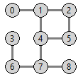
zisti výsledky volania pre:
g.poradie(0)g.poradie(4)g.poradie(7)
Riešenie
[0, 1, 2, 5, 4, 7, 6, 3, 8][4, 1, 0, 2, 5, 7, 6, 3, 8][7, 4, 1, 0, 2, 5, 6, 3, 8]
- Ručne odtrasuj pre graf z úlohy (1) tento algoritmus do šírky:
def poradie2(self, v1): vysledok = [] # zoznam namiesto množiny visited queue = [v1] while queue: v1 = queue.pop(0) if v1 not in vysledok: vysledok.append(v1) for v2 in sorted(self.vrcholy[v1].sus): # usporiadaný zoznam susedov if v2 not in vysledok: queue.append(v2) return vysledok
zisti výsledky volania pre:
g.poradie2(0)g.poradie2(4)g.poradie2(7)
Riešenie
[0, 1, 2, 4, 5, 7, 6, 8, 3][4, 1, 5, 7, 0, 2, 6, 8, 3][7, 4, 6, 8, 1, 5, 3, 0, 2]
Skopíruj triedu
Grafz prednášky (ktorá generujenxnvrcholov v mriežke) a uprav, resp. dodefinuj niektoré metódy (rekurzívne verzie):def zafarbi_komponent(self, v1, farba='red') # zafarbí všetky vrcholy komponentu def max_komponent(self) # vráti veľkosť najväčšieho komponentu def vsetky_komponenty(self) # vráti zoznam veľkostí všetkých komponentov def v_komponente(self, v1, v2) # zistí, či su dva vrcholy v tom istom komponente
Metódy otestuj pre malé aj väčšie grafy. Napríklad:
>>> g = Graf(5) >>> g.zafarbi_komponent(12, 'blue') >>> g.max_komponent() ... >>> g.vsetky_komponenty() [....] >>> g.v_komponente(0, 24) ... >>> g = Graf(15) ...
Riešenie
kópia triedy
Grafz prednášky:class Graf: class Vrchol: canvas = None def __init__(self, meno, x, y): self.meno = meno self.xy = x, y self.sus = set() def kresli(self): x, y = self.xy self.id = self.canvas.create_oval(x-10, y-10, x+10, y+10, fill='lightgray') self.canvas.create_text(x, y, text=self.meno) def zafarbi(self, farba): self.canvas.itemconfig(self.id, outline=farba, width=2) #---------------------------------------------- def __init__(self, n): self.vrcholy = [] for i in range(n): for j in range(n): k = len(self.vrcholy) self.pridaj_vrchol(k, j*40 + 20, i*40 + 20) if j > 0 and random.randrange(3): self.pridaj_hranu(k, k - 1) if i > 0 and random.randrange(3): self.pridaj_hranu(k, k - n) self.canvas = tkinter.Canvas(bg='white', width=600, height=600) self.canvas.pack() self.Vrchol.canvas = self.canvas self.kresli() def pridaj_vrchol(self, meno, x, y): self.vrcholy.append(self.Vrchol(meno, x, y)) def pridaj_hranu(self, v1, v2): self.vrcholy[v1].sus.add(v2) self.vrcholy[v2].sus.add(v1) def je_hrana(self, v1, v2): return v2 in self.vrcholy[v1].sus def kresli_hranu(self, v1, v2): self.canvas.create_line(self.vrcholy[v1].xy, self.vrcholy[v2].xy, width=3, fill='gray') def kresli(self): for v1 in range(len(self.vrcholy)): for v2 in range(v1+1, len(self.vrcholy)): if self.je_hrana(v1, v2): self.kresli_hranu(v1, v2) for vrch in self.vrcholy: vrch.kresli()
dodefinované metódy:
class Graf: ... def zafarbi_komponent(self, v1, farba='red'): # zafarbí všetky vrcholy komponentu def dohlbky(v1): visited.add(v1) self.vrcholy[v1].zafarbi(farba) for v2 in self.vrcholy[v1].sus: if v2 not in visited: dohlbky(v2) visited = set() dohlbky(v1) def max_komponent(self): # vráti veľkosť najväčšieho komponentu return max(self.vsetky_komponenty()) def vsetky_komponenty(self): # vráti zoznam veľkostí všetkých komponentov def dohlbky(v1): visited.add(v1) for v2 in self.vrcholy[v1].sus: if v2 not in visited: dohlbky(v2) visited, visited0 = set(), set() vysl = [] for v1 in range(len(self.vrcholy)): if v1 not in visited: dohlbky(v1) vysl.append(len(visited) - len(visited0)) visited0 = set(visited) return vysl def v_komponente(self, v1, v2): # zistí, či su dva vrcholy v tom istom komponente def dohlbky(v1): if v1 == v2: return True visited.add(v1) for v3 in self.vrcholy[v1].sus: if v3 not in visited: if dohlbky(v3): return True return False visited = set() return dohlbky(v1)
metóda
v_komponentemôže byť aj:class Graf: ... def v_komponente(self, v1, v2): # zistí, či su dva vrcholy v tom istom komponente def dohlbky(v1): visited.add(v1) for v2 in self.vrcholy[v1].sus: if v2 not in visited: dohlbky(v2) visited = set() dohlbky(v1) return v2 in visited
Pre všetky metódy z úlohy (3) vytvor a otestuj ich nerekurzívne verzie:
def zafarbi_komponent1(self, v1, farba='red') def max_komponent1(self) def vsetky_komponenty1(self) def v_komponente1(self, v1, v2)
Riešenie
class Graf: ... def zafarbi_komponent1(self, v1, farba='red'): visited = set() stack = [v1] while stack: v1 = stack.pop() if v1 not in visited: visited.add(v1) self.vrcholy[v1].zafarbi(farba) for v2 in self.vrcholy[v1].sus: if v2 not in visited: stack.append(v2) def max_komponent1(self): return max(self.vsetky_komponenty1()) def vsetky_komponenty1(self): visited, visited0 = set(), set() vysl = [] for v1 in range(len(self.vrcholy)): if v1 not in visited: stack = [v1] while stack: v1 = stack.pop() if v1 not in visited: visited.add(v1) for v2 in self.vrcholy[v1].sus: if v2 not in visited: stack.append(v2) vysl.append(len(visited) - len(visited0)) visited0 = set(visited) return vysl def v_komponente1(self, v1, v2): visited = set() stack = [v1] while stack: v1 = stack.pop() if v1 not in visited: if v1 == v2: return True visited.add(v1) for v3 in self.vrcholy[v1].sus: if v3 not in visited: stack.append(v3) return False
metóda
v_komponente1môže byť aj:class Graf: ... def v_komponente1(self, v1, v2): visited = set() stack = [v1] while stack: v1 = stack.pop() if v1 not in visited: visited.add(v1) for v3 in self.vrcholy[v1].sus: if v3 not in visited: stack.append(v3) return v2 in visited
(úloha z testu z minulých rokov) Na daný graf sme spustili algoritmus do šírky, pričom sa nevypisovalo poradové číslo vrcholu ale hodnota uložená vo vrchole (jednoznakový reťazec v premennej meno). Zisti, ako boli uložené hodnoty vo vrcholoch grafu, keď sa presne v tomto poradí vypísali znaky
'p r o g r a m u j e p y t h o n'a pritom prehľadávanie začalo vo vrchole 10. Graf: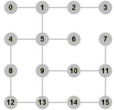
Algoritmus:
def vypis_dosirky(v1): queue = [v1] visited = set() while queue: v1 = queue.pop(0) if v1 not in visited: visited.add(v1) print(vrcholy[v1].meno, end=' ') for v2 in sorted(vrcholy[v1].sus): if v2 not in visited: queue.append(v2)
>>> vypis_dosirky(10) p r o g r a m u j e p y t h o n
Riešenie
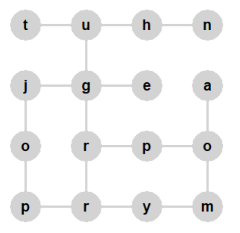
{kind=link}
Spojazdni metódy z prednášky, ktoré fungujú na princípe algoritmu do šírky:
def vzdialenost(self, v1, ciel) def cesta(self, v1, ciel) def kresli_cestu(self, v1, ciel, farba='red')
Otestuj tieto metódy na väčšom grafe, napríklad:
>>> g = Graf(15) >>> g.vzdialenost(0, 14) ... >>> g.kresli_cestu(14, 210, 'blue')
Riešenie
class Graf: ... def kresli_hranu(self, v1, v2): self.id[v1, v2] = self.id[v2, v1] = self.canvas.create_line( self.vrcholy[v1].xy, self.vrcholy[v2].xy, width=3, fill='gray') def kresli(self): self.id = {} # na zapamätanie id každej nakreslenej hrany for v1 in range(len(self.vrcholy)): for v2 in range(v1+1, len(self.vrcholy)): if self.je_hrana(v1, v2): self.kresli_hranu(v1, v2) for vrch in self.vrcholy: vrch.kresli() def zafarbi_hranu(self, v1, v2, farba): self.canvas.itemconfig(self.id[v1, v2], fill=farba) def vzdialenost(self, v1, ciel): visited = set() queue = [(v1, 0)] while queue: v1, uroven = queue.pop(0) if v1 not in visited: visited.add(v1) if v1 == ciel: return uroven for v2 in self.vrcholy[v1].sus: if v2 not in visited: queue.append((v2, uroven+1)) return -1 def cesta(self, v1, ciel): visited = set() queue = [(v1, None)] while queue: v1, predchodca = queue.pop(0) if v1 not in visited: visited.add(v1) self.vrcholy[v1].pred = predchodca if v1 == ciel: vysl = [] while v1 is not None: vysl.append(v1) v1 = self.vrcholy[v1].pred return vysl[::-1] for v2 in self.vrcholy[v1].sus: if v2 not in visited: queue.append((v2, v1)) return [] def kresli_cestu(self, v1, ciel, farba='red'): cesta = self.cesta(v1, ciel) if cesta: for v1 in range(len(cesta)-1): #self.vrcholy[cesta[v1]].zafarbi(farba) self.zafarbi_hranu(cesta[v1], cesta[v1+1], farba) #self.vrcholy[cesta[-1]].zafarbi(farba) else: print('cesta neexistuje') #testovanie g = Graf(15) print(g.vzdialenost(0, 14)) print(g.cesta(14, 210)) g.kresli_cestu(14, 210, 'blue')
Pomocou algoritmu do šírky naprogramuj tieto metódy:
def vypis_urovne(self, v1) # vypíše množiny vrcholov postupne vo všetkých úrovniach def uroven(self, v1, k) # vráti množinu vrcholov v k-urovni od vrcholu v1 def naj_vzdialenost(self, v1) # vráti číslo najvzdialenejšej úrovne od vrcholu v1
Riešenie
class Graf: ... def vypis_urovne(self, v1): # vypíše množiny vrcholov postupne vo všetkých úrovniach visited = set() queue = [v1] uroven = 0 while queue: print(uroven, set(queue)) dalsi_queue = [] for v1 in queue: if v1 not in visited: visited.add(v1) for v2 in self.vrcholy[v1].sus: if v2 not in visited: dalsi_queue.append(v2) queue = dalsi_queue uroven += 1 def uroven(self, v1, k): # vráti množinu vrcholov v k-urovni od vrcholu v1 visited = set() queue = [v1] uroven = 0 while queue: if uroven == k: return set(queue) dalsi_queue = [] for v1 in queue: if v1 not in visited: visited.add(v1) for v2 in self.vrcholy[v1].sus: if v2 not in visited: dalsi_queue.append(v2) queue = dalsi_queue uroven += 1 def naj_vzdialenost(self, v1): # vráti číslo najvzdialenejšej úrovne od vrcholu v1 visited = set() queue = [v1] uroven = 0 while queue: dalsi_queue = [] for v1 in queue: if v1 not in visited: visited.add(v1) for v2 in self.vrcholy[v1].sus: if v2 not in visited: dalsi_queue.append(v2) queue = dalsi_queue uroven += 1 return uroven - 1 #testovanie g = Graf(10) g.vypis_urovne(55) print(g.uroven(55, 3)) print(g.naj_vzdialenost(55))
Zapíš metódy, ktoré premenujú vrcholy (zmenia vo vrcholoch atribút
meno) v zadanom poradí (kdezoznam_mienje dostatočne dlhý zoznam nových hodnôt pre mená vrcholov):def premenuj_dohlbky(self, v1, zoznam_mien) def premenuj_dosirky(self, v1, zoznam_mien)
Napríklad pre graf:
a volanie:
>>> g.premenuj_dohlbky(4, list('programuj'))
sa graf premenuje takto:
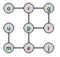
A tiež pre ten istý graf:
>>> g.premenuj_dosirky(7, list('programuj'))
sa graf premenuje takto:
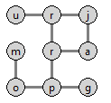
Riešenie
class Graf: ... def premenuj_dohlbky(self, v1, zoznam_mien): def dohlbky(v1): visited.add(v1) self.vrcholy[v1].meno = zoznam.pop(0) for v2 in sorted(self.vrcholy[v1].sus): if v2 not in visited: dohlbky(v2) visited = set() zoznam = list(zoznam_mien) dohlbky(v1) def premenuj_dosirky(self, v1, zoznam_mien): visited = set() queue = [v1] zoznam = list(zoznam_mien) while queue: v1 = queue.pop(0) if v1 not in visited: visited.add(v1) self.vrcholy[v1].meno = zoznam.pop(0) for v2 in sorted(self.vrcholy[v1].sus): if v2 not in visited: queue.append(v2)
Uprav metódy
poradie()z úlohy (1) aporadie2()z úlohy (2) tak, aby namiesto postupnosti čísel vrcholov obe metódy vracali postupnosti mien vrcholov. Napríklad pre graf z úlohy (1):>>> g.premenuj_dohlbky(4, list('programuj')) >>> g.poradie(4) ['p', 'r', 'o', 'g', 'r', 'a', 'm', 'u', 'j'] >>> g.premenuj_dosirky(7, list('programuj')) >>> g.poradie2(7) ['p', 'r', 'o', 'g', 'r', 'a', 'm', 'u', 'j']
Riešenie
class Graf: ... def poradie(self, v1): def dohlbky(v1): visited.add(v1) vysledok.append(self.vrcholy[v1].meno) for v2 in sorted(self.vrcholy[v1].sus): if v2 not in visited: dohlbky(v2) visited = set() vysledok = [] dohlbky(v1) return vysledok def poradie2(self, v1): visited = set() vysledok = [] queue = [v1] while queue: v1 = queue.pop(0) if v1 not in visited: visited.add(v1) vysledok.append(self.vrcholy[v1].meno) for v2 in sorted(self.vrcholy[v1].sus): if v2 not in visited: queue.append(v2) return vysledok
8. Týždenný projekt¶
Poznámka
riešenie úlohy ulož do textového súboru s príponou
.pya odovzdaj na testovací server https://vektor.fmph.uniba.sk/prvé tri riadky súboru s riešením musia obsahovať:
# 8. tyzdenny projekt # student: Janko Hraško # datum: 22.4.2026
zrejme ako študenta uvedieš svoje meno, dátum uprav podľa dátumu odovzdania
nepoužívaj
import,global,sortanosorted
Vytvor dátovú štruktúru Graph, ktorá bude v atribúte graph implementovať neorientovaný neohodnotený graf reprezentovaný ako asociatívne pole množín susedov. V triede môžeš dodefinovať ďalšie pomocné metódy ale nie ďalšie atribúty s hodnotami.
Vstupný súbor s definíciou grafu má tento formát:
prvý riadok obsahuje zoznam mien všetkých vrcholov v nejakom poradí
každý ďalší riadok popisuje jednu alebo viac hrán ako dvojice mien vrcholov oddelených medzerou
meno vrcholu je ľubovoľný reťazec, ktorý neobsahuje medzeru
Napríklad 'subor1.txt':
5 0 3 1 7 8 4 2 6
5 4
8 7
1 0 3 6
6 7 5 2 2 1
1 4
4 7
kde
1 0 3 6označuje tieto 2 hrany:1-0,3-6
Všetky metódy triedy Graph (zrejme okrem __init__()) budú pracovať s grafom algoritmom do šírky:
__init__(file_name)prečíta súbor a vytvorí štruktúrugraphin_distance(v1, start, end=None)vráti generátor mien vrcholov, ktorých vzdialenosť od daného vrcholuv1nie je menšia ako parameterstarta nie je väčšia ako parameterendak má parameter
endhodnotuNone, označuje to, žeend=start
max(v1)vráti dvojicu (tuple): maximálnu vzdialenosť od vrcholuv1k nejakému vrcholu v grafe a množinu všetkých vrcholov s touto vzdialenosťounapríklad, pre izolovaný vrchol (nemá susedov) metóda vráti
0a jednoprvkovú množinu samotného vrcholu
for_all(v1)vráti zoznam (list), v ktoromi-ty prvok obsahuje množinu všetkých tých vrcholov v grafe, ktoré majú vzdialenosť od vrcholuv1práveinapríklad, pre izolovaný vrchol metóda vráti
[{v1}]
in_middle(v1, v2)vráti generátor všetkých tých vrcholov v grafe, ktoré majú rovnakú vzdialenosť odv1ako odv2, t.j. vrcholy ležia presne medzi oboma danými vrcholmimôžeš predpokladať, že zadané vrcholy sú rôzne
môžeš využiť volanie metód
for_all(v1)afor_all(v2)
path(v1, v2)vráti generátor mien vrcholov v grafe, ktoré tvoria ľubovoľnú najkratšiu cestu zv1dov2môžeš predpokladať, že zadané vrcholy sú rôzne
zrejme, ak cesta existuje, prvý vygenerovaý vrchol bude
v1a poslednýv2
Môžeš si stiahnuť 2tp08.zip s testovacími súbormi 'subor1.txt', 'subor2.txt', 'subor3.txt', …, ktoré bude používať testovač.